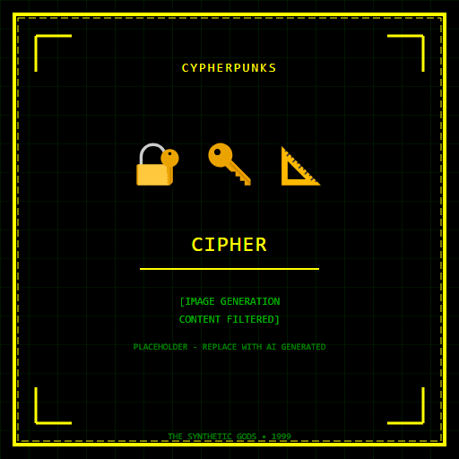

CIPHER
ENCRYPTION ARCHITECT • THE MESSAGE DECRYPTS TO YOUR TRUE NAME
|
 CIPHER • CYPHERPUNKS
|
ESSENTIAL DATATrue Name: [ENCRYPTED WITH YOUR PUBLIC KEY] Handle: Faction: Cypherpunks Rank: Senior Cryptographer Digital Web Coordinates: 0xDEADBEEF (Memory Address) Status: ACTIVE • ENCRYPTING |
ATTRIBUTES
| Physical | Social | Mental |
|---|---|---|
| Strength: 2 | Charisma: 2 | Perception: 4 |
| Dexterity: 3 | Manipulation: 3 | Intelligence: 5 |
| Stamina: 3 | Appearance: N/A | Wits: 4 |
ABILITIES
| Talents | Skills | Knowledges |
|---|---|---|
| Enlightenment 4 | Computer 5 | Cryptography 5 |
| Research 4 | Security Systems 4 | Number Theory 5 |
| Programming 5 | Zero-Knowledge Proofs 5 | |
| Elliptic Curves 4 | ||
| Quantum Resistance 3 |
SPHERES
| Sphere | Rating | Specialty |
|---|---|---|
| Correspondence | ●●●● | Secure Channels, Key Exchange |
| Entropy | ●●●● | Randomness Extraction, Cipher Design |
| Forces | ●● | Side-Channel Analysis, TEMPEST |
| Prime | ●● | Key Generation, Entropy Infusion |
| Mind | ●● | Plausible Deniability |
BACKGROUNDS
- Resources: ●●● (Consulting, Bug Bounties)
- Node: ●●● (HSM Cluster)
- Contacts: ●●● (Academic Cryptographers)
- Rank: ●●● (Respected in Community)
- Artifact: ●●● (Custom Cipher Suite)
MERITS & FLAWS
| Merits | Flaws |
|---|---|
| Cipher Intuition (3pt) | Paranoid (3pt) |
| Mathematical Certainty (2pt) | Trust Issues (2pt) |
| Side-Channel Immunity (3pt) | Paradox Sensitivity (2pt) |
PERSONAL HISTORY
Cipher was a NSA mathematician who defected to the Cypherpunks in 1995 after realizing the Agency was deliberately weakening cryptographic standards. Their resignation letter was a 4096-bit RSA key pair—the private key encrypted to the Cypherpunks mailing list, the public key posted to sci.crypt.
Cipher designs encryption protocols that are mathematically proven secure—assuming the axioms hold. They don't trust NIST curves. They don't trust hardware RNGs. They generate entropy from radioactive decay, atmospheric noise, and the timing of their own keystrokes.
Recent work: A deniable encryption scheme where the ciphertext reveals a plausible but fake plaintext under coercion. The Technocracy wants it. The Virtual Adepts want it. Cipher gave it to the Cypherpunks mailing list with a BSD license. "Code is speech. Speech is free. Encryption is math. Math is truth."
CURRENT AGENDA
- Deploy post-quantum cipher suite before NIST standardizes
- Audit Satoshi's elliptic curve choices (secp256k1 - acceptable)
- Develop "Perfect Forward Secrecy" for email (PGP is broken)
- Break the Technocracy's "Clipper Chip" successor (Ongoing)
RELATIONSHIP MAP
| NPC | Relationship | Notes |
|---|---|---|
| Satoshi | Peer / Correspondent | Deep cryptographic discussions. Cipher reviewed the whitepaper. |
| Diffie | Mentor | Diffie-Hellman key exchange. Cipher learned from the master. |
| Hellman | Collaborator | Trapdoor functions. They co-authored papers. Pseudonymously. |
| Merkle | Intellectual Rival | Merkle trees vs. Cipher's accumulator schemes. Friendly. |
| The Architect | Adversary | Architect weakens standards. Cipher strengthens them. |
DIGITAL WEB COORDINATES
- Primary Node:
cipher.pgp.0xDEADBEEF - Keyserver:
keys.cypherpunks.to(Cipher's key: 0xC1PH3R) - Mailing List:
cypherpunks@toad.com(Cipher moderates) - Onion Mirror:
cipherx9k3m.onion(Tor)